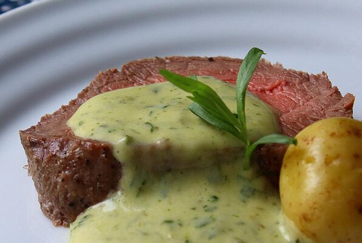

Bernaise Sauce

Description
Infused with tarragon and shallots, this modified hollandaise sauce pairs perfectly
with any
and all cuts of steak or roasts, especially lean ones. My all time favourite
steak sauce!
Ingredients
Reduction
- 1 cup fresh tarragon
- 1/2 cup thinly sliced shallots
- 1 teaspoon whole black peppercorns
- 1/2 cup white wine vinegar
- 1/2 cup white wine
- 1/3 cup water
Compound Butter
- 1/4 cup chopped fresh tarragon
- 1 teaspoon drained and dried capers
- 1 tablespoon cold unsalted butter
Bernaise
- 2 large egg yollks
- 3 tablespoons tarragon-vinegar reduction
- 8 tablespoons cold unsalted butter
- 1 tablespoon caper-tarragon compound butter
- salt and pepper to taste
Directions
- Place 1 cup tarragon, shallots, and peppercorns in a saucepan.
Pour in white wine vinegar, white wine, and water.
Place over medium-high heat
and bring to a simmer; stir. Reduce heat to medium-low to maintain a gentle
simmer and reduce
liquid to about 3 tablespoons, 20 to 30 minutes. Remove from
heat. Strain into a bowl through a fine mesh strainer,
pressing vegetable/herb
mixture to extract as much liquid as possible.
- Place 1/4 cup chopped tarragon and capers in a mortar. Mash with a pestle about
1 minute. Add 1 tablespoon cold butter. Mash
and pound with pestle until ingredients
are thoroughly combined in a solid mass. Transfer to a piece of plastic wrap; wrap
and chill.
- Place egg yolks in a stainless steel (flameproof) mixing bowl; add 3 tablespoons
tarragon/shallot reduction; whisk together. Add cold
butter cubes. Place bowl over low
to medium heat whisking constantly until sauce thickens, as you hold the bowl with a
kitchen towel.
After butter melts continue whisking; mixture will turn a lighter yellow
color after 8 to 10 minutes. When mixture is nice and thick,
reduce heat to low and stir
in compound butter broken into chunks. Continue whisking. Remove from heat.
Season with
salt, and black pepper.
Return to Main Page